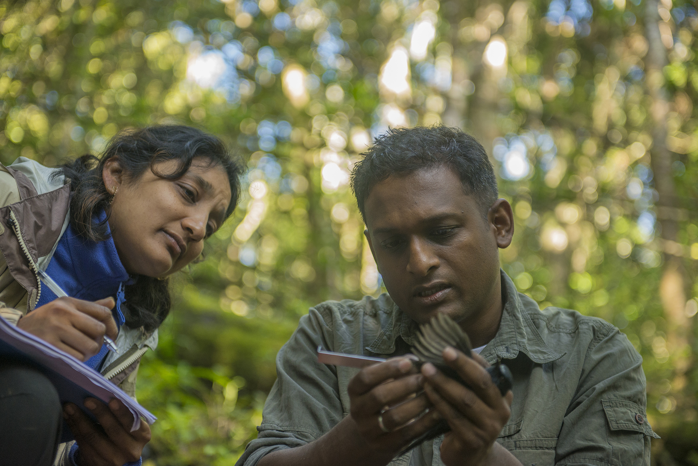

Stories of Exploration
Wild Earth is inspired by documentary photography and global exploration. The purpose of this project is to celebrate landscapes, wildlife, and storytelling while demonstrating modern web accessibility and design.
This project uses semantic HTML, accessibility principles, Flexbox, Grid layouts, hover effects and responsive design.